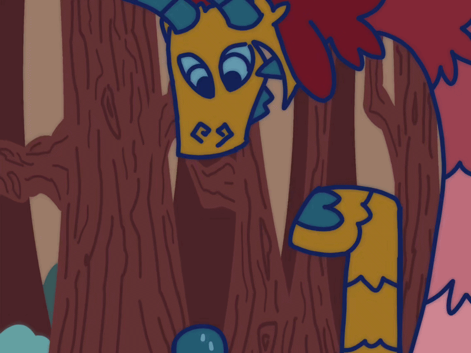

“Oh, thank you little creature! Could you look over under those brambles? I can’t fit, too big you see. My stick is blue, and has a forked end. Hard to miss, very unique!” The monster gestures with his giant hooves. That place looks kind of dangerous...
He justs to skewer you for easy cooking! Tell him off! Well, let's go find that stick! Back to beginning.